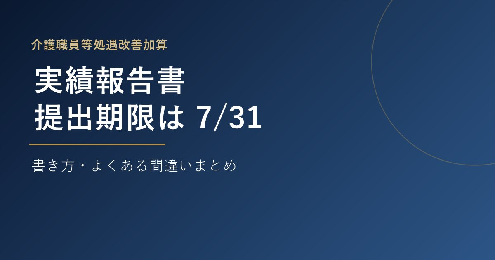

KAIGO KEIEI PARTNERS
A better world of long-term care
住宅型有料老人ホーム(埼玉県)
赤字 → 月100万円の営業利益
18名定員のデイサービス
稼働率60% → 90%
50床のサービス付き高齢者向け住宅
半年で月商+400万円
Message
介護施設や職員の様子を直接拝見しなければ、本当の課題は見えてきません。現場に何度も足を運び、経営者様と同じ目線で課題に向き合うことを大切にしています。利益の確保と、地域に根差した信頼される施設運営の両立を目指し、短期間で成果につながるご支援をいたします。まずはお気軽にご相談ください。
Services
業務効率化から収益改善、稼働率アップまで。介護経営パートナーズは、施設の実態に合わせたコンサルティングを行います。
多くの施設の共通の課題として、業務効率が悪いために人件費が経費を圧迫していることがよくあります。
老人ホームの経営において、収益がしっかりと確保できないパターンは大きく分けて3つあります。
稼働率が低い要因は、サービスが悪いか、営業の質と量が不足しているかのいずれかです。
New Business
物件選定から人員配置、資金調達、指定申請まで一貫してサポートします。
収支シミュレーション・指定申請・人員採用から開業後の稼働率アップまで伴走します。
エリア需要調査からサ責の配置計画、指定申請、開業後の営業活動まで伴走します。
看護師確保の見通しづくりから収支シミュレーション、指定申請まで伴走します。
Column

2026.07.19
2021.08.08
2021.08.24
コラム一覧を見る
Case Studies
埼玉県の25床の住宅型有料老人ホーム。月売上450万円・赤字状態から、月売上700万円・営業利益100万円へ改善。
稼働率60％・赤字状態のデイサービスが、1年で稼働率90％、営業利益80万円/月まで改善。
訪問看護を新たに併設し、単月売上が半年で400万円上昇。医療対応度の高い施設へレベルアップ。
貴施設の課題をお伺いし、最適なコンサルティング内容をご提案いたします。